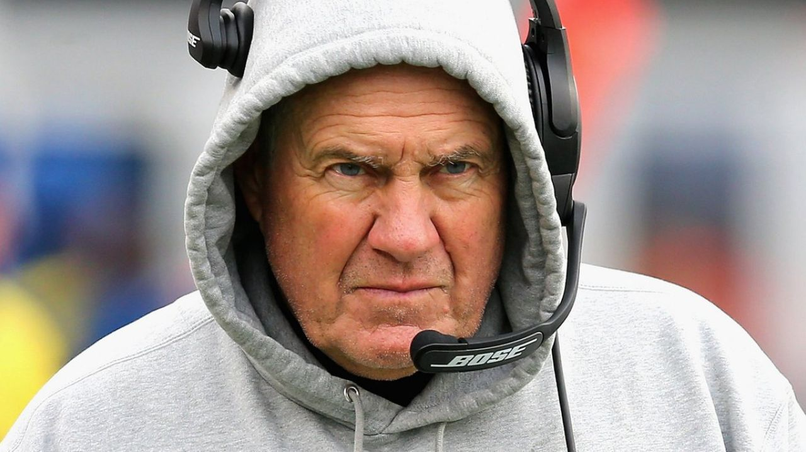

Brady Ruined Belichick's Legacy
- 
From 1991 to 2000, the hoodie had exactly ONE winning season with a record of 41-55. Even though he technically had Brady in 2000, he would not start until 2001.
We know what happened after that: the biggest dynasty in sports with six Super Bowls from 2001 to 2019, countless divisional championships, and a handful of conference championships. Now that the two have separated, the hoody is back to a losing record while Brady took another team to the big game.
Source